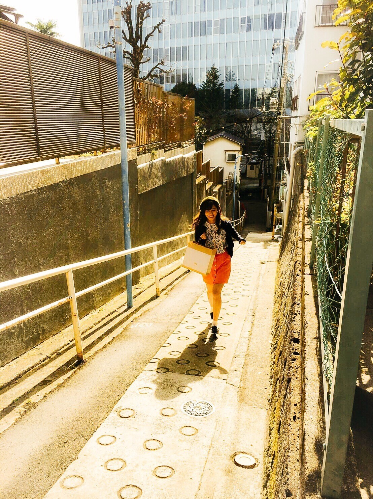

| 2017/02 17 Fri | 斎藤ちはる 20歳になりました。 |
2017年2月17日を迎えて、
20歳になりました。
乃木坂に入ったときはまだ
中学3年生の14歳だったのに、
今はもう大学2年生の20歳。
時が経つのがやけに早く感じます。
14歳〜20歳というこの時間を
大好きなメンバーと
お世話になってるスタッフさんと
そして大切なファンの皆さんと
過ごすことが出来て幸せです！！
私が想像していた20歳には
まだ全然なれていませんが...
20歳としての自覚を持って
日々成長していきたいです！
ここまで育ててくれている両親には
本当に感謝しています。
いつも支えてくれて味方でいてくれてありがとう。
世界に2人しかいない両親と
世界に1人しかいない妹。
これからも大切にしていきたいと思います。
そしていつも応援してくださっている皆さん！
皆さんがいるから頑張れています。
本当に。
もっと素敵な景色を見せられるように
もっと素敵な自分を見せられるように
これからも頑張っていきたいと思います！
昔からずっと10代に見えないって
言われてきた私。
やっと年齢に顔が追い付いてきたのかな(> <)笑
歳を重ねても20歳という年は
思い出すことも多くなるんだろうな。
思い返した時に
楽しい思い出ばかりだったなと思えるように
素敵な一年にしないと思います\( ˆ ˆ )/
----------------------------------------♡
♬ ChihaMusic
「HAPPY」BUMP OF CHICKENさん
誕生日。
元気な曲も良いなとは思ったけど
支えられてるこの曲にしたい。
歌詞がとても深くて考えさせられる。
"続きを進む恐怖の途中
続きがくれる勇気にも出会う"
続ける事は大変なことも多いし
辞めた方が楽な事なんて山ほどある。
でも辞めたら、諦めたらそこで終わりだし
何事も諦めず前へ進み続けることが
大切なんだなって
この曲を聞いていて改めて思う。
Happy Birthday。

これからも坂を上り続けていきます！
斎藤ちはる